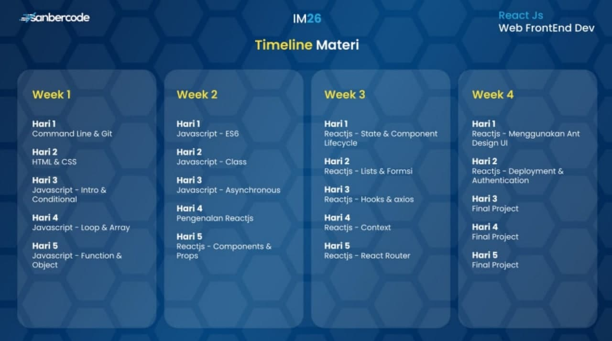

Kick Off
Ahad, 15 Agustus 2021
Catatan Ringkas
-
Setiap harinya akan diberikan video pembahasan materi dan tugas dari trainer setelah tugas dikumpulkan. Selain itu dibuka sesi live session menggunakan
Microsoft Teams setiap 19.15 WIB sampai maksimal pukul 20.15 WIB untuk tanya jawab. Disarankan menonton video pembahasan terlebih dahulu sebelum mengikuti live session tanya jawab. (live
session tidak selalu setiap hari dan jam nya bisa berubah sesuai dengan kondisi trainer)
-
Komponen penilaian yaitu 20% TH + 10% Q1 + 10% Q2 + 30% Q3 + 30% Proyek Akhir
- TH = Rata - Rata Tugas Harian
- Q1 = Quiz Pekan 1 berbentuk pilihan ganda
- Q2 = Quiz Pekan 2 berbentuk pilihan ganda
- Q3 = Quiz Pekan 3 berbentuk mini project
- Proyek akhir berbentuk web single page application
-
Timeline Materi

Gambar 1. Timeline materi tiap pekan
-
Grup diskusi dapat dipakai untuk tempat tanya jawab seputar materi atau bertanya tentang error yang dialami. Akan ada trainer yang akan siap membantu dan semua
peserta tetap dapat saling membantu tanpa menunggu jawaban dari trainer. Gunakan fitur tagar pada Telegram seperti #tanyaHTML , #tanyaCSS, #tanyaPHP, dsb. agar memudahkan pencarian.
-
Waktu fast response trainer @yogimahaputra setiap hari jam 10.00 sampai 12.00 (2 jam) Trainer berkomitmen untuk fast response di jam tersebut. Jadwal fast
response trainer nanti di pin di grup diskusi, di luar jam tersebut trainer akan tetap berusaha menjawab setiap pertanyaan peserta dengan slow response
-
Jika sudah 30 menit atau sudah jenuh membaca dokumentasi atau googling masih belum mendapat pencerahan silakan tanyakan ke grup diskusi. Jika ada code yang mau dishare bisa disertakan
gambar screenshot (printscreen) (Ada tombol di keyboard dengan code PrtSrc) di desktop dan codenya dishare di
pastebin.com.